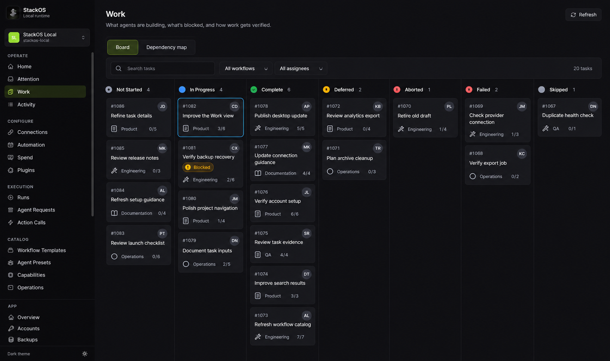
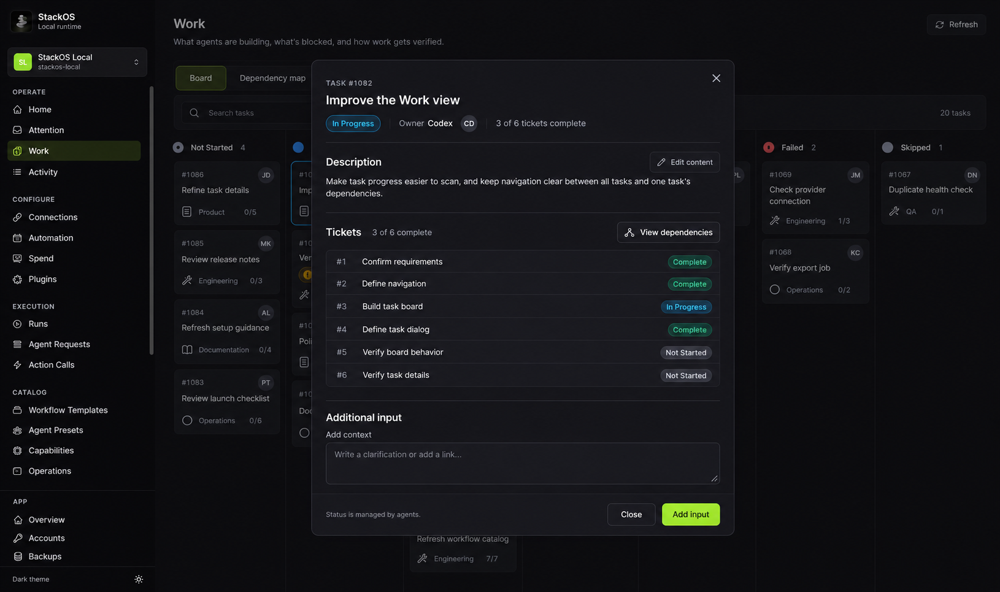
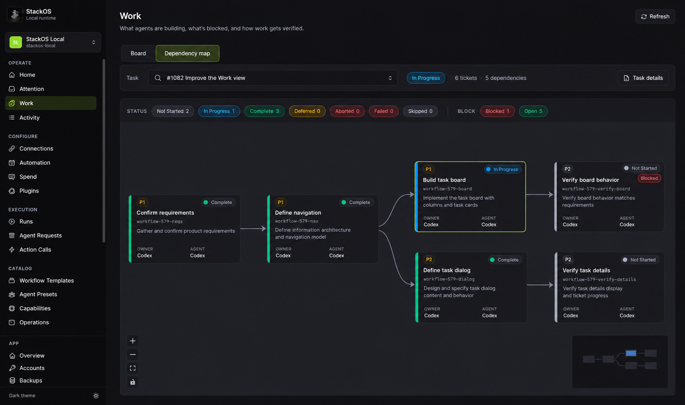
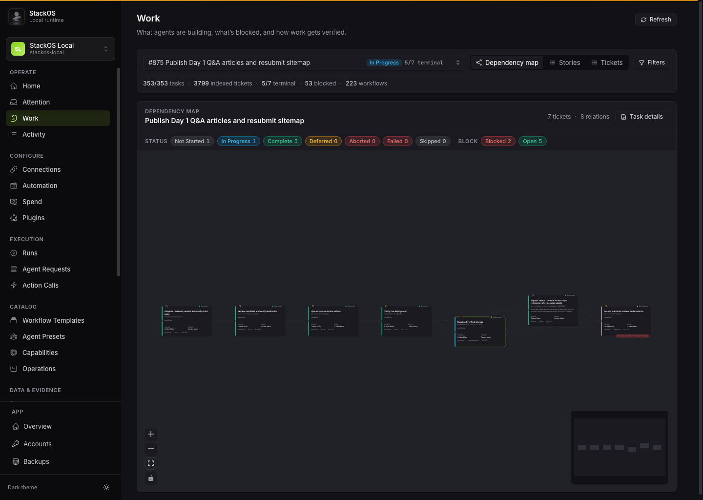
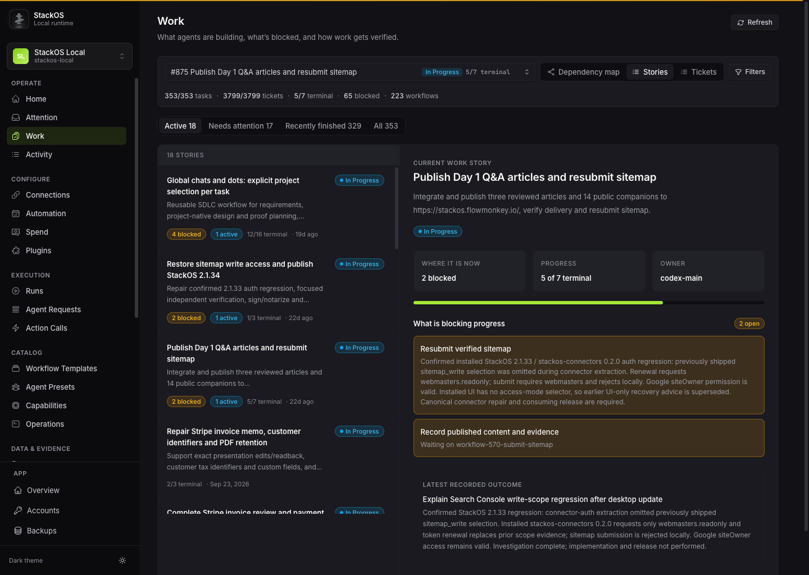
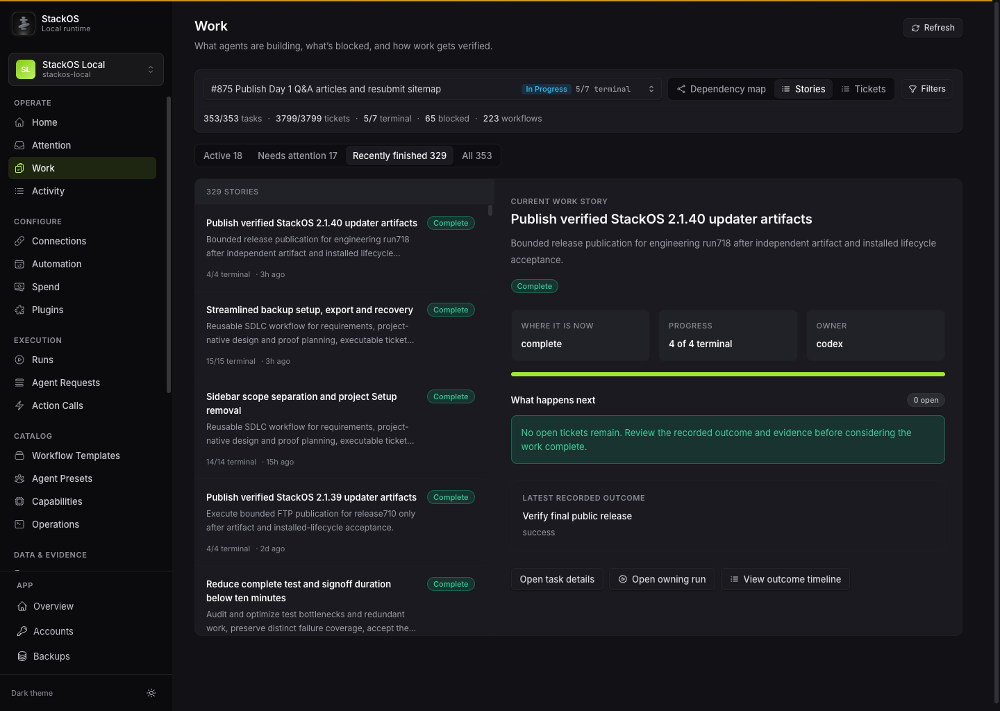
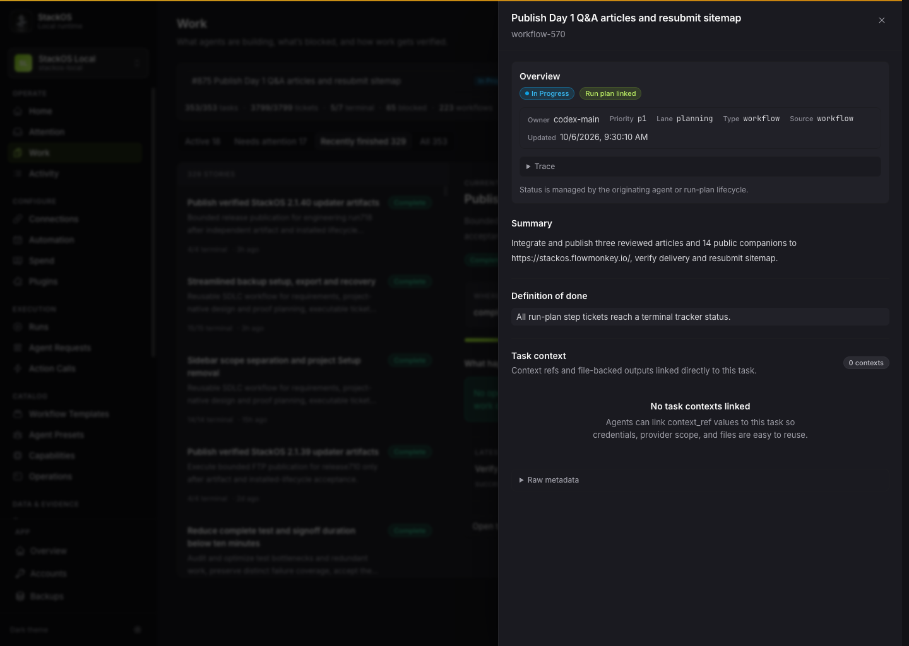

October 28, 2026 · Design only · StackOS project 1
Work: Board and Dependency map
The view switch belongs to Work. Single-task selection belongs only to Dependency map.
One connected flow
Board → click task → centered task popup → View dependencies → that exact task’s map → Board restores the previous overview.
| Surface | Scope and controls | Navigation |
|---|
| Board — default Work view | All matching project tasks in seven fixed status columns. Search, workflow and assignee filters. No single-task selector. | A card opens its explicit task identity in a centered popup. |
| Task popup | Description, context, ticket list, content editing and additional input. Read-only status. | View dependencies opens this task’s map. A ticket opens within the same popup with Back to task. Close restores the originating view. |
| Dependency map | One task’s ticket graph. A map-only task selector, task status, ticket/dependency counts, and Task details. | Node click opens that ticket. Board returns to the prior board without applying map selection as a filter. |
Only Board and Dependency map remain in Work navigation. Tickets remain accessible as task content and graph nodes.
Three states of the same journey
All concepts use task #1082, Improve the Work view, with 3 of 6 tickets complete. These are static images, not a functioning prototype.
1. Board

Project task board; no selected-task dropdown; fixed Board/Dependency map tabs; task filters below; seven fixed status columns; task1082 in progress,3/6 complete.
2. Task popup

Centered task1082 popup over the same board; explicit View dependencies; six ticket rows,3complete; content edit and additional input; no Tickets tab.
3. Dependency map

Same shell/tabs; map-only task1082 selector;6tickets5edges; counts and ticket names consistent; no Board filters; preserve existing graph node styling.
Entry, return and empty states
- Default Work entry opens Board.
- An explicit valid map deep link opens its linked project task, before considering remembered selection.
- Direct map tab entry reuses last valid map task for that project; if none exists, show Choose a task to view dependencies with the normal task picker.
- An invalid or unavailable linked task shows unavailable/reselect state; never silently substitute another.
- Map task picker searches all tasks in the current project, independently of board filters.
- A task with no tickets retains its context row and Task details, and shows No tickets yet.
- Tickets with no edges remain visible as disconnected nodes.
- Switching projects clears incompatible selection and scopes remembered view/filter state to each project.
- Browser Back follows deliberate navigation; closing a deep-linked popup restores its underlying view; opening/closing must not unexpectedly change task identity.
- Protect unsaved content before leaving the popup using existing dialog behavior.
What the live review found
The existing shared task selection creates an identity mismatch. After filtering Stories to Recently finished, the page displays task #1078, but its detail button opens the task #875 still selected above.
| Step | Observed health |
|---|
| 1. Open selected task's dependency map | Scope coherent; fit-to-view makes long chains difficult to read.
Task #875 selected; map shows its seven tickets. Selected task belongs here. |
| 2. Switch to Stories task overview | Conflicting scopes
Single-task selector persists above a multi-task overview. Selected task currently still matches details. |
| 3. Filter overview to Recently finished | Broken selection consistency
Visible story changes to completed task #1078 Publish verified StackOS 2.1.40 updater artifacts. Top selector remains in-progress task #875 Publish Day 1 Q&A articles and resubmit sitemap. |
| 4. Open visible story's task details | Wrong task opens
Details panel opens #875 despite visible story being #1078. |
1. Evidence: Open selected task's dependency map

Scope coherent; fit-to-view makes long chains difficult to read. — Task #875 selected; map shows its seven tickets. Selected task belongs here.2. Evidence: Switch to Stories task overview

Conflicting scopes — Single-task selector persists above a multi-task overview. Selected task currently still matches details.3. Evidence: Filter overview to Recently finished

Broken selection consistency — Visible story changes to completed task #1078 Publish verified StackOS 2.1.40 updater artifacts. Top selector remains in-progress task #875 Publish Day 1 Q&A articles and resubmit sitemap.4. Evidence: Open visible story's task details

Wrong task opens — Details panel opens #875 despite visible story being #1078.Read-only capture used the StackOS native browser. No application source was changed. Keyboard behavior, dialog focus, history restoration and saving are not proven by these screenshots.
Implementation boundary
- Keep board task identity, selected map task and popup identity explicit. Do not reuse one hidden selection for all three.
- Use existing StackOS components and semantic tokens. Generated styling is illustrative; the board’s blue outline must use the existing lime focus token. Show the same derived Blocked badge in ticket list and graph.
- Preserve board filters and scroll on return, with actual browser history for deliberate navigation. Explicit task and ticket links must reopen the correct context.
- Board freshness must cover all displayed project tasks, not only the selected map task.
- Remove the Tickets navigation/route branch and update owned entry points together. Specific ticket links open task-owned ticket details. Aggregate Home ticket links need an explicitly named Contains tickets filter, not a silently reinterpreted task-status filter.
- Graph filters must make hidden context clear. Do not inherit board filters into a task’s dependency graph.
Independent review confirmed matching task identity, counts, tab placement, scoped selectors, six nodes/five edges and the complete shell. Static concepts cannot verify interactive behavior.
Source packet: navigation contract · audit evidence · independent review · generation brief and provenance